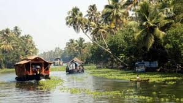

HoneymoonPrice Starting From 10,000/-4N/5D MUNNAR-2D THEKKADY-1D COCHIN-1DThe curling of the backwater, with the lush greenery and the freshness of the air, makes Keralathe best places to visit in the south | Family TripPrice Starting From 15,000/-3N/4D THEKKADY-2D COCHIN-1Dkerala taxi packages for thehill station serene, swaying elephant rides and gentle breeze cold climate, find much more to make your tour more interesting and get the bestmunnar thekkady taxi packageitinerary experience | Friends TripPrice Starting From 8,000/-2N/3D ATHIRAPPILLY-1D THEKKADY-1D ALLEPPEY-1DThe energizing beauty of the terrain with the green mountains, the calm and consoling backwaters, the crystalline freshness of beaches makes Kerala, best tourist place. |
Two MembersPrice per person 5,000/-2N/3D MUNNAR-2D COCHIN-1Dhis is the beautiful hill station that was once the summer capital of British government in India. The widespread tea plantation makes this place beautiful and perfect for a visit. Stay overnight at the hotel. | Five MembersPrice per person 7,000/-3N/4D MUNNAR-2D THEKKADY-1D COCHIN-1DBlessed with a touch of nature, Kerala offers the amazing spot for the vacation. The energizing beauty of the terrain with the green mountains, the calm and consoling backwaters, the crystalline freshness of beaches makes Kerala, best tourist place. |  Ten MembersPrice per person 6,000/-4N/5D MUNNAR-2D THEKKADY-1D COCHIN-1DKnown for the back beach scene, swaying elephant rides and gentle houseboat, find much more to make your tour more interesting and get the best South India itinerary experience. Blessed with a touch of nature, Kerala offers the amazing spot for the vacation. |